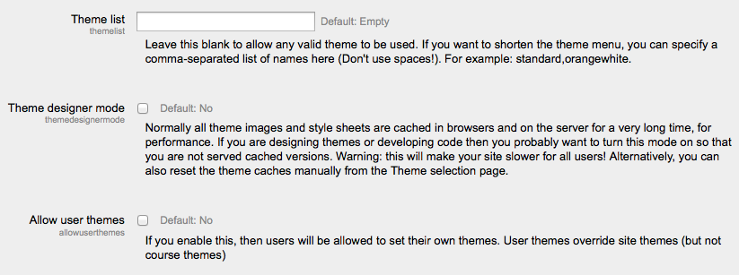

An administrator can change theme settings in Settings > Site administration > Appearance > Themes > Theme settings.
This lists the themes available for course and user themes. Leave this blank to allow any valid theme to be used. If you want to shorten the theme menu, you may specify a comma-separated list of names, though don’t use spaces (e.g. standard,orangewhite).
You can preview the available themes in Administration > Site Administration > Appearance > Themes > Themes selector.
Turn this on if you are designing and testing themes as it will stop the themes being cached and enable you to see theme changes quickly. (You can also do this with the Clear theme cache button on the theme selector page.)
If the option allowuserthemes is enabled, each user may select their preferred theme on the edit profile page. All Moodle pages will be displayed in the user’s theme, apart from courses where a course theme has been set.
NOTE: the user’s theme will not be available in mobile and tablet devices unless the option enabledevicedetection is unchecked.
If you enable this, then teachers will be able to set their own course themes. Course themes override all other theme choices (site, user, or session themes).
- If the option allowcoursethemes is enabled, each editing teacher may select their course theme via the Force theme option on the Course settings page. The course will always be displayed in the theme specified in the course setting, with user and the site themes being overwritten.
NOTE: the course theme will not be available in mobile and tablet devices unless the option enabledevicedetection is unchecked.
When enabled, themes can be set at the category level. This will affect all child categories and courses unless they have specifically set their own theme. WARNING: Enabling category themes may affect performance, as it will result in a few extra DB queries on each page, so only turn this on if you need it!
NOTE: the category theme will not be available in mobile and tablet devices unless the option enabledevicedetection is unchecked.
If this is checked then the theme may be changed by adding ?theme=theme_name (or &theme=theme_name if there are other URL parameters) to the URL in the browser. Theme names should be in lower case with spaces replaced by underscores, for example the theme “Formal white” should be entered as ?theme=formal_white .
Allows users to display and hide blocks.
If the theme allows it, then checking this will allow the user to move blocks to the side dock.
Will detect mobile and tablets that identify themselves via the web browser at the time of login to Moodle. These work with the theme selector. When the theme selector has identified a default, mobile and tablet themes, this feature will use that theme.
This will allow you to customize the theme selector options. For example, you can add a custom theme for IE6 and another for Windows CE by entering the identifying expressions the browser sends and the “Return value” you want to display as the theme selectors “Device type”.
Logo, tagline, link colour, column width, custom CSS and other settings for a particular theme may be set by an administrator in Administration > Site administration > Appearance > Themes > Theme name.